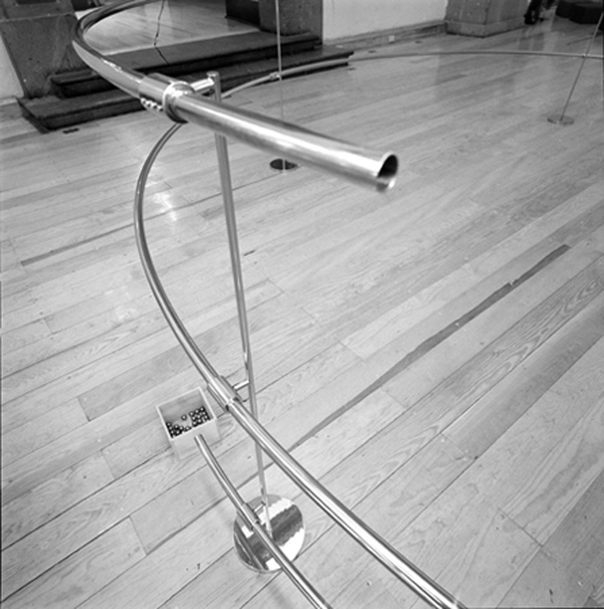

Ciclón
Parallax, group exhibition, Laboratorio Arte Alameda, Mexico City
2014
Stainless-steel tube, stainless-steel stands, steel balls, wooden box
5 x 5 x 1 m
The work was a circular version of an earlier one, and designed especially for the interior of an exhibition
space beneath the dome of a former church in the centre of Mexico City. The core of the work, a long, curved,
stainless-steel tube in several parts, was supported and held together by simple stainless-steel struts. The
spiral led downwards at a shallow angle. The public could choose to roll steel balls slowly down the spiral,
making the structure resonate and creating a sound that was reflected by the stone interior of the exhibition
space.
